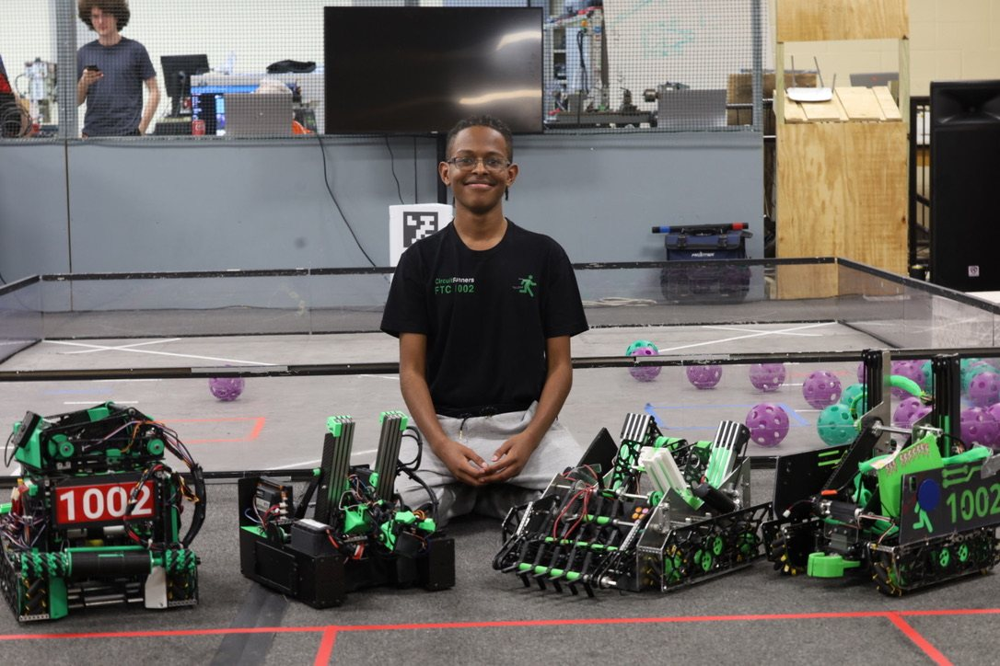
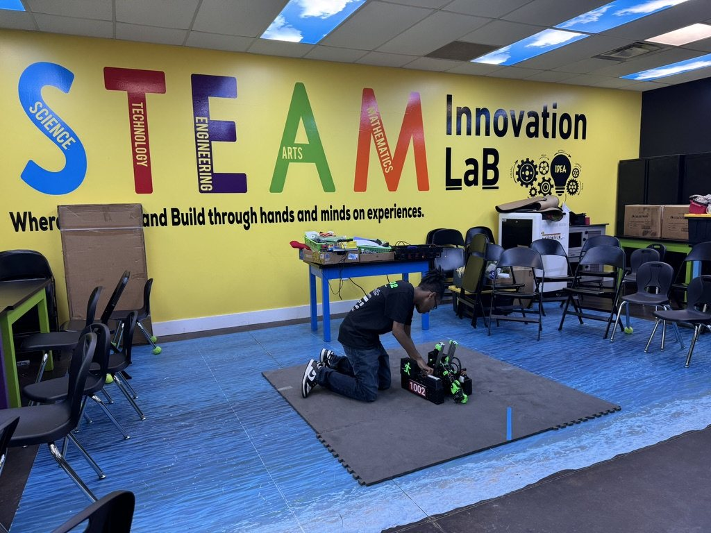

Students In Space Club
President / Vice President
President, 2025–26 · Vice President, 2024–25 · Marietta, GA
- Led club planning, mentored new members and coordinated aerospace projects from concept through build and presentation.
- Founded and managed the Students In Space Podcast.
- Competed in the 2025 Canada Space Design Competition and 2024 Georgia Tech/NASA Payload Challenge.
FIRST Tech Challenge
Lead Designer & CAD Builder
CircuitRunners Robotics · Team 1002 Surge · August 2022 – May 2026
- Directed robot design and mechanism development using SOLIDWORKS, Java and 3D printing, contributing to three FIRST World Championship appearances.
- Mentored underclassmen in CAD, build accuracy and troubleshooting.
- Led team marketing and served as a stand-in drive coach during competition.
View CAD work · View robotics awards

Four seasons of robot development with CircuitRunners FTC 1002 Surge.
Demonstrating FTC robotics during a STEM outreach event.